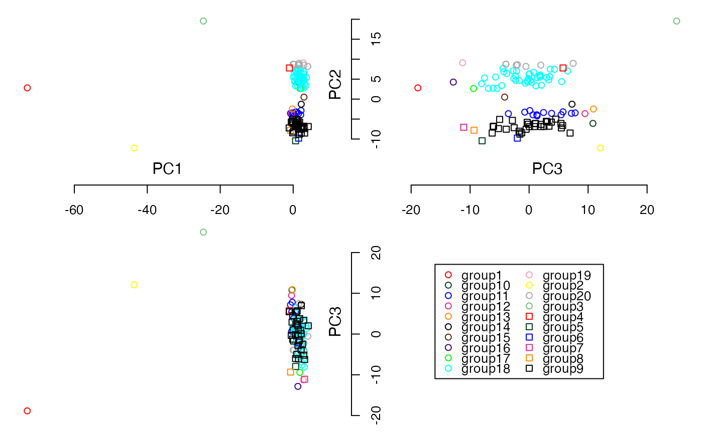

R/rubikClust.R
rubikclust.RdHandle and operate on Nx3 matrix, where N is the number of samples and data are collected on 3 variables.
rubikclust(X, min.space = 0.4, rotation = TRUE)
| X | A data matrix for which rows represent samples and the 3 columns represent features. Missingness is not allowed. |
|---|---|
| min.space | A value to specify a minimum space between 2 consecutive projected values. Default = 0.4. |
| rotation | To specify if rotation is enabled or not. Default = TRUE. |
The returned value is a vector of numbers representing cluster memberships.
The function rubikClust is able to take up to 3 variables (N x 3 matrix). In case, a matrix contains more than 3 columns, only the first three columns are used; the other columns are ignored.
#Load simulated dataset data(example_SNP) PCs <- cal.pc.linear(simsnp$snp, no.pc = 3) #Run rubikclust with the default parameters groups <- rubikclust(PCs$PC) #Check clustering results print(groups)#> [1] 4 4 4 4 4 4 4 4 4 4 4 4 4 4 4 4 4 4 4 4 4 4 4 4 4 4 4 4 4 4 4 4 4 4 4 4 4 #> [38] 4 4 4 4 4 4 4 4 4 4 4 4 4 4 4 4 4 4 4 4 4 4 4 4 4 4 4 4 4 4 4 4 4 4 4 4 4 #> [75] 4 4 4 4 4 4 4 4 4 4 4 4 4 4 4 4 4 4 4 4 4 4 4 4 4 4 2 1 3#> groups #> 1 2 3 4 #> 1 1 1 100#Check the plot, highlight the points according to the clustering result mylabels <- paste0("group", as.factor(groups)) plot3views( PCs$PC, labels = mylabels)#Run rubikclust with min.space = 0.02 groups <- rubikclust(PCs$PC, min.space = 0.02) #Check clustering results print(groups)#> [1] 18 18 18 18 18 18 18 18 4 15 18 18 18 18 18 18 18 18 18 18 18 18 16 20 20 #> [26] 17 18 20 18 18 18 18 18 18 18 20 18 20 18 18 18 18 18 19 18 20 20 18 18 18 #> [51] 11 9 9 9 11 9 14 9 9 9 9 9 9 9 9 11 9 9 10 9 9 11 9 9 9 #> [76] 11 11 9 11 9 9 7 6 9 11 9 8 9 11 9 13 9 12 11 9 5 11 9 9 11 #> [101] 2 3 1#> groups #> 1 2 3 4 5 6 7 8 9 10 11 12 13 14 15 16 17 18 19 20 #> 1 1 1 1 1 1 1 1 30 1 12 1 1 1 1 1 1 38 1 7#Check the plot, highlight the points according to the clustering result mylabels <- paste0("group", as.factor(groups)) plot3views( PCs$PC, labels = mylabels)